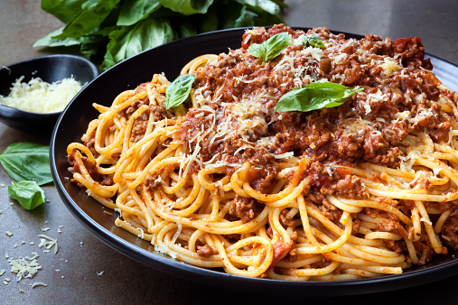

Bolognese

This classic Italian dish made of rich, meaty sauce is a delicacy that takes patience to make.
Try out this recipe, follow it but also try to adjust it to your own taste and enjoy.
Description
Ingredients
- onion
- carrot
- celery
- garlic
- 500 grams of minced beef
- tomato sauce
- milk
- salt
- pepper
Steps
- Brown meat on a hot pan.
- Remove the meat from the pan and slowly fry sofritto made of onion, celery and carrot.
- When done, add meat and tomato sauce and cook on a low fire for at least four hours.
- At the end, add a little bit of milk to make sauce creamy.